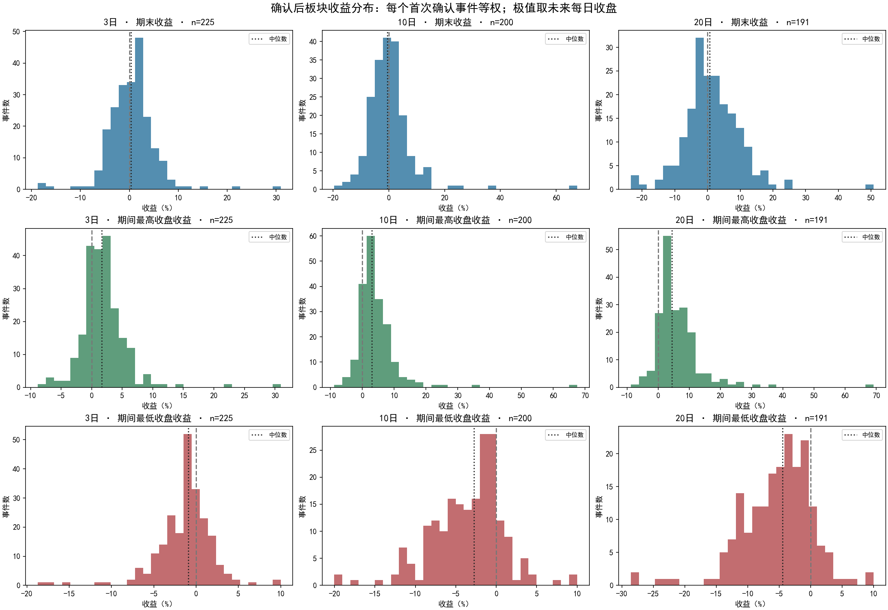
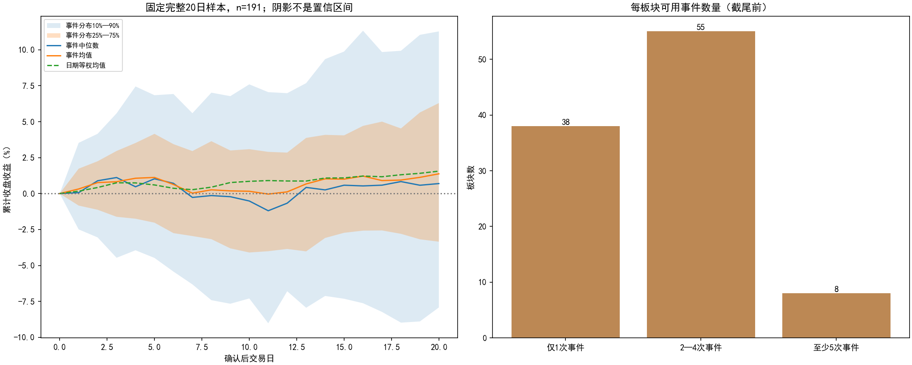
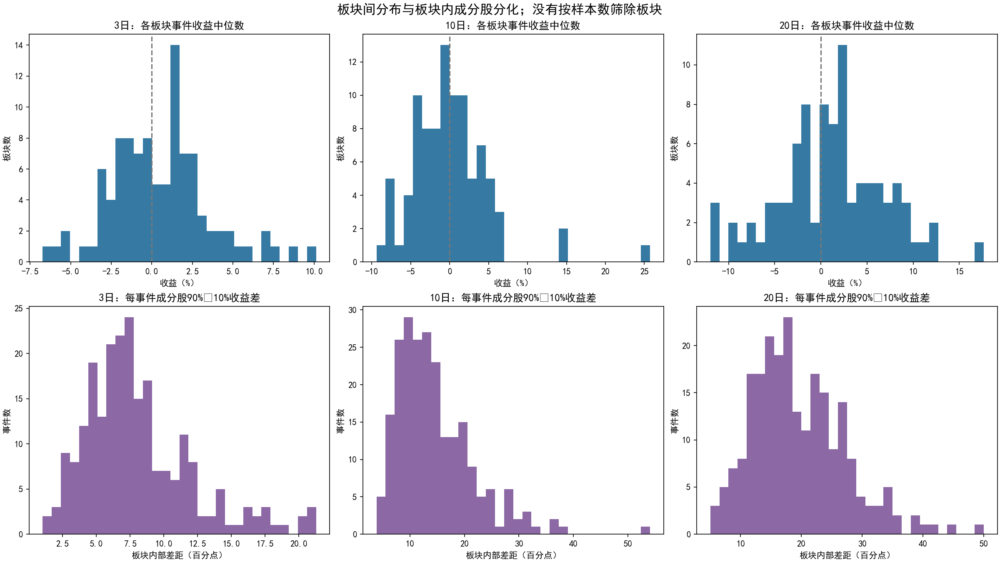
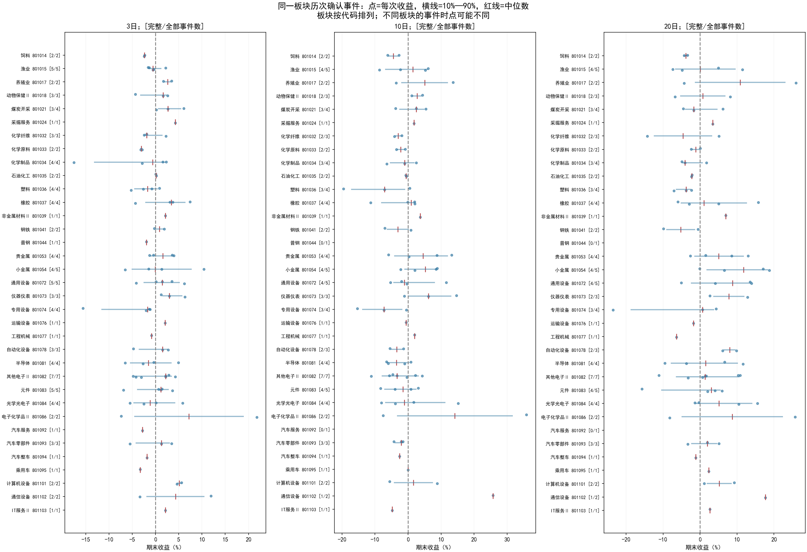
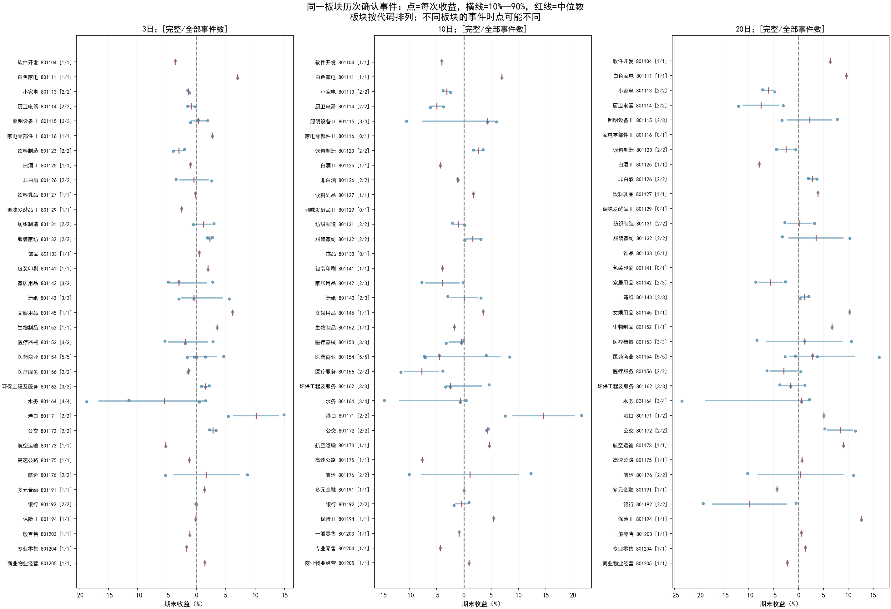
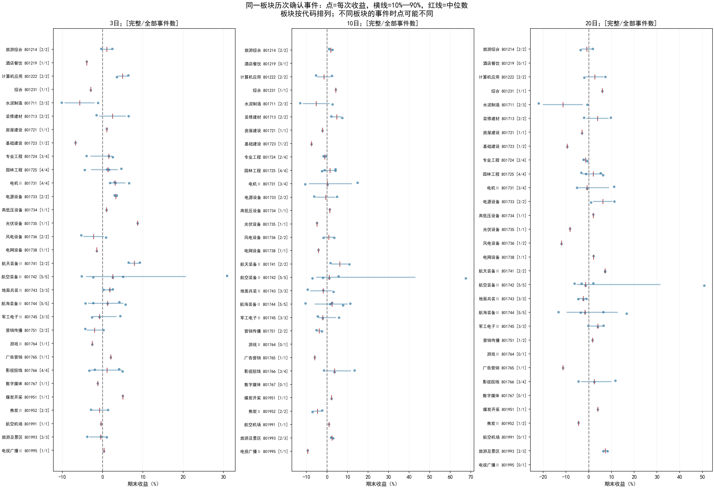
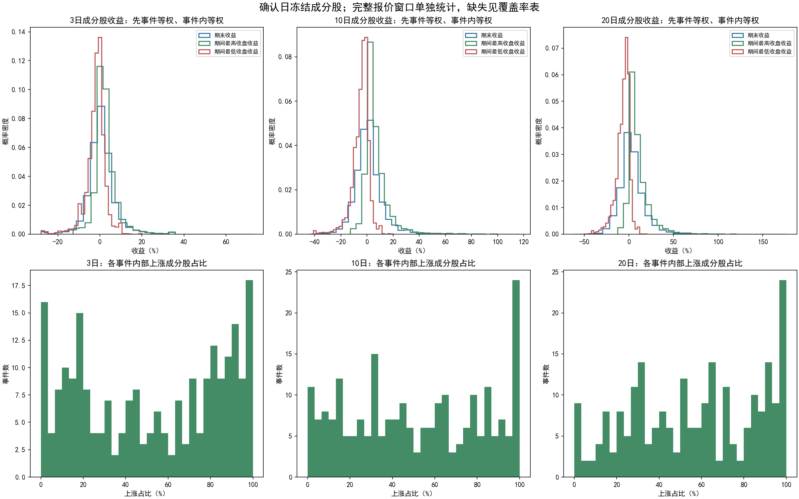

确认后3／10／20日收益及板块内外分布
起点为首次确认日收盘；极值为随后每日收盘收益极值。详见同目录README。
overall_distributions.png

return_paths_and_support.png

between_sectors_and_member_dispersion.png

within_sector_events_01.png

within_sector_events_02.png

within_sector_events_03.png

within_event_members.png
